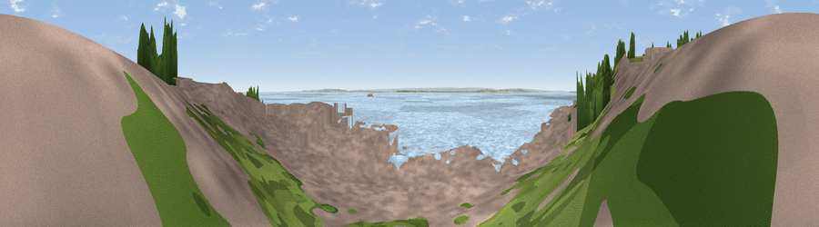

Viewpoint near Southend-on-Sea
#44999 in England · top 95% of its area beats it · near Southend-on-SeaThe view, rendered

A 360° render of this exact spot computed from the terrain model, tree cover and land cover — summer colours, afternoon light, calibrated against photographs of famous viewpoints. Real trees, hedges and buildings will differ in detail.
The panorama
Grey silhouette: terrain skyline in each direction (720 bearings, Earth curvature and refraction included). Dashed green: skyline with trees (+15 m) and buildings (+8 m) as obstacles. Blue strip: how far the ground is visible on each bearing.
Where the view opens
Wedge length = distance to the farthest visible ground on that bearing (vegetation-aware). Rings at 10, 25 and 50 km.
What fills the view
56% water · 35% built-up · 3% woodland · 3% grassland · 1% cropland
Angular shares of the visible panorama (visual magnitude), not map area. Landscape diversity 0.43 (0–1 Shannon).
Key numbers
More beautiful places nearby
The staircase of upgrades: each row has a higher view potential than everything closer. Driving times are estimates from straight-line distance, calibrated against real road routing — check an actual route before setting out.
| Place | Direction | Drive | Score |
|---|---|---|---|
| Viewpoint near Southend-on-Sea | W · 1 km | ~3 min | 39.8 |
| Viewpoint near Hadleigh | W · 7 km | ~15 min | 57.4 |
| Viewpoint near Hadleigh | W · 8 km | ~17 min | 61.0 |
| Viewpoint near South Benfleet | WNW · 10 km | ~19 min | 62.9 |
| Viewpoint near Bluebell Hill | SSW · 27 km | ~43 min | 63.3 |
| Bluebell Hill | SW · 27 km | ~43 min | 64.8 |
| Viewpoint near Boxley | SSW · 27 km | ~44 min | 65.4 |
| Viewpoint near Boxley | SSW · 28 km | ~44 min | 68.6 |
51.53341, 0.71469 · source: osm viewpoint · position refined by local search. Computed location — check access rights before visiting.